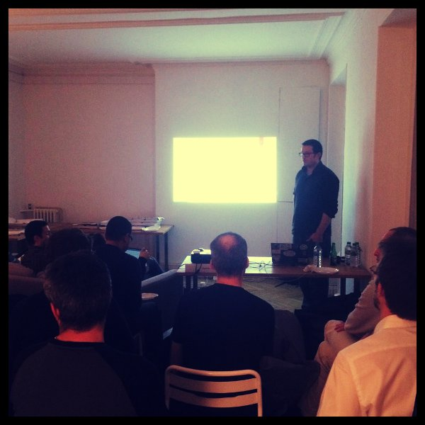
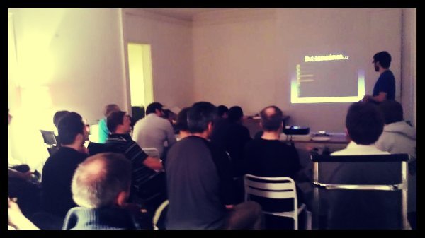

La communauté Salt s'est a nouveau réunie pour son meetup bi-mestriel autour de trois présentations. Voici un compte rendu (très court) pour vous renvoyer vers les références.
Utilisation de salt pour gérer des machines desktop sous windows et mac os.
Aurélien Minet de l'ENS Cachan nous a présenté son utilisation de salt dans la gestion de postes utilisateurs OS X et Windows.
OS X:
Windows:
- salt.modules.win_*
- salt.modules.chocolatey
- salt.modules.reg
- pour chocolatey, possibilité d'héberger un repo sous linux avec Simple Nuget
- Mise en commun d'installeurs windows sous forme de states sur salt-winrepo
Création de statistiques pour une infrastructure salt
Arthur Lutz de Logilab nous a présenté un développement pour évaluer la distance entre l'état souhaité de son infrastructure salt et l'état réel.
SaltPad
Boris Feld de tinyclues nous a présenté une interface web pour piloter salt.
Conclusion
Merci à tinyclues d'avoir acceuilli et apporté à boire, ainsi qu'à Logilab pour les pizzas.
Pour le prochain meetup (en janvier), votez pour une date sur framadate et n'hésitez pas à inscrire une proposition de présentation ou de lieu sur le pad d'organisation.